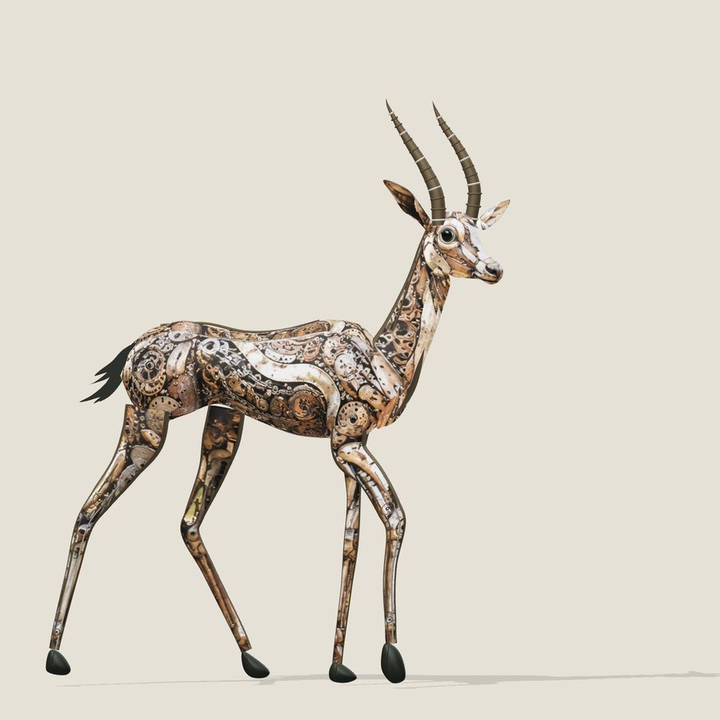

Selected work
Work you can inspect,
not just take my word for.
I work across practical AI, workflows, documentation, and communication. This public record shows the practice in context, with original sources where they exist.
Founder practice
Kramaniti
I help teams make complicated work easier to run: clearer workflows, useful AI support, and communication people can act on.
I founded Kramaniti to help teams map how work runs, improve handoffs, document the process, and decide where people need to stay involved.
See the current practice ↗Sculpture study / 2026
Chinkara,
in reclaimed metal.
A web study for Chinkara, a proposed sculpture made from reclaimed automotive metal. Scroll down the page and the parts come together into the full figure.
Once the figure is complete, you can drag to turn the model, then see it from eight angles, including the underside and a close look at the head and horns.
See the sculpture study ↗
Visual storytelling / 2019
Bangalore,
from above.
A public drone-film compilation made with a DJI Mavic Air. It comes from the visual storytelling work that taught me how attention, movement, and a clear point of view shape understanding.
It is one public record from that chapter, shared with its original source so it can be viewed in context.
View the published film ↗04 / Video archive
Published work / selected
Moving image,
with the source attached.
Seven published films, kept with their original YouTube sources so the work can speak for itself.
Source reel / 07 published films Open the archive↓
An earlier record of moving-image work. Open it to browse the original published films.


Public writing / 2018—2026
Writing that makes
the work easier to use.
Earlier notes cover filmmaking, independent work, and storytelling. Current essays focus on the systems, decisions, and human checkpoints behind useful AI adoption.
The question has stayed consistent: how can people understand the work in front of them, then make it clearer to do and explain?